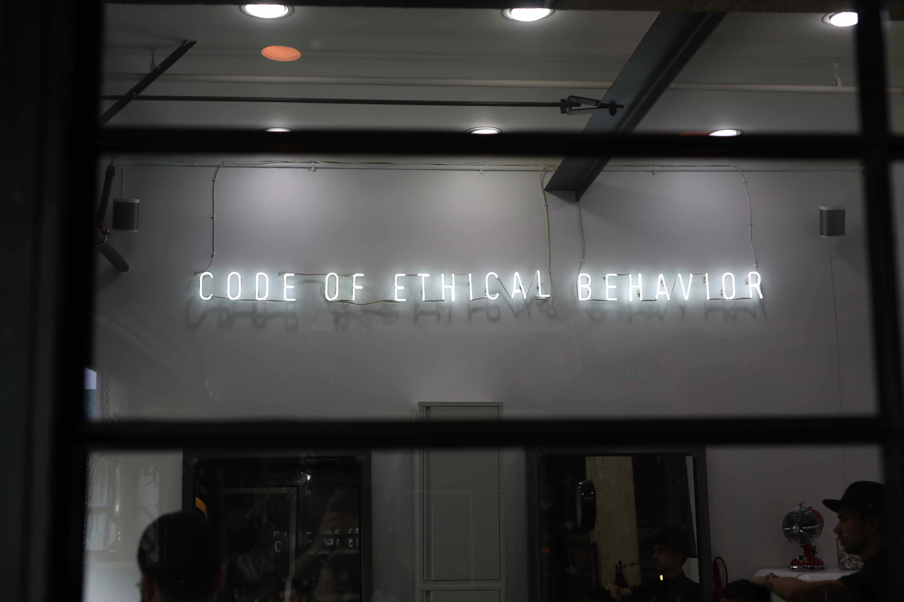

Presentasi Bisnis - Menyajikan dengan Percaya Diri

Langkah-langkah Presentasi Bisnis
Apakah Anda pernah melakukan presentasi di depan orang banyak? Apa hal yang Anda khawatirkan ketika melakukan presentasi? Apakah kekurangan yang Anda sadari saat melakukan presentasi? Jika jawabannya iya coba lah untuk menyimak video berikut yang berujudul 5 Menit Yang Mengubah Hidup Selamanya. Untuk dapat menyampaikan presentasi dengan efektif dan efisien, berikut ini merupakan tahapan dalam melakukan presentasi:
- Preparation
- Introduction
- Main Points
- Conclusion
Preparation
- Sebelum melakukan presentasi, pastikan Anda telah mengetahui hal-hal berikut:
- Siapa audience/peserta yang akan hadir?
- Apa yang mereka perlukan?
- Apa yang telah mereka ketahui?
- Apa kesamaan yang dimiliki?
- Agar presentasi kita optimal dan menarik, kita juga perlu memerhatikan dan mempersiapkan hal-hal berikut ini:
- Persiapkan outfit yang akan digunakan.
- Persiapkan ice breaking atau jokes.
- Persiapkan jawaban atas pertanyaan-pertanyaan yang mungkin akan muncul.
Introduction
- Pada tahap introduction (pengenalan), pastikan Anda menyampaikan hal-hal berikut:
- Jelaskan siapa Anda
- Jelaskan alasan kehadiran Anda
- Sampaikan apa yang akan Anda bicarakan
- Jelaskan bagaimana Anda akan menyampaikannya
berikut adalah kata-kata pada saat introduction. “Selamat siang Rekan-Rekan semuanya, terima kasih telah bergabung pada acara siang hari ini.” (Salam dan Sapa). “Saya Ariel, Tim Develop Website 1%, saya akan menjelaskan tentang materi berikut ini” (Perkenalan). “Selama 30 menit kedepan saya akan mempresentasikan materi beriktu, yang dibagi menjadi 3 bagian, yaitu Preparation, Introduction, Main Points, dan Conclusion” (Tujuan & Garis Besar (Outline) Presentasi). “Jika ada pertanyaan, jangan segan bertanya pada akhir sesi nanti.” (Informasi untuk Q&A). Bagaimana jika kita menjadi perwakilan yang harus memperkenalkan tim sebelum presentasi? untuk perkenalannya seperti ini, “Saya Ariel, saya bekerja di 1% Team sebagai Developer. Saya disini bersama tim saya, perkenalkan Zhaky, dan Adit, dan juga Darmawan kami akan menjelaskan tentang proses pembuatan website ini“. ada beberapa tips dalam melakukan presentasi bisnis bagian introduction, yaitu:
- Proper greetings atau Salam yang benar
- Grab attention form audiences atau Tarik perhatian dari audiens
- Inform the duration atau Informasikan durasinya
Main Points
- Pada tahap main points, pastikan Anda menyampaikan hal-hal berikut:
- Menjelaskan inti dari presentasi yang akan disampaikan (overview)
- Menyampaikan key points presentasi
- Setiap key points dijelaskan dari makro ke mikro.
- Upayakan memberikan contoh yang familiar untuk audiens.
- Jika pindah ke key points selanjutnya, pastikan berkesinambungan antar point-nya.
- Beri jeda/break jika diperlukan.
Untuk memudahkan audiens memahami penjelasan yang disampaikan, berikut hal-hal yang bisa dilakukan. yang pertama gunakan visual yang baik dan menarik, tidak berlebihan. Kedua Sampaikan data / trend / quote untuk memperkuat fakta. Dan yang ketiga atau terakhir Berikan highlight / emphasis untuk setiap hal yang penting.
Conclusion
- Pada tahap conclusion (kesimpulan), pastikan Anda menyampaikan hal-hal berikut:
- Sampaikan/ulangi inti pesan Anda menjadi sebuah kesimpulan yang ringkas.
- Sampaikan harapan yang ingin dicapai peserta/audience setelah acara berakhir.
- Salam penutup.
Presentasi Bisnis Petunjuk
- Bagaimana sih menjawab pertanyaan yang susah saat melakukan presentasi?
- Konfirmasi pertanyaan yang diberikan.
- Berikan informasi atau jawaban yang Anda diketahui.
- Akui jika Anda belum mengetahui jawaban lengkapnya.
- Informasikan bahwa Anda akan memberikan jawaban lengkap dan komprehensif saat Anda sudah mencari tahu.
- Tanyakan kepada yang bertanya cara menghubunginya, jika Anda belum mengetahuinya.
- Tips Visualisasi Materi Presentasi
- Buatlah atau gunakan template slides dengan warna yang sesuai dengan brand/produk perusahaan.
- Hindari penggunaan warna yang terlalu banyak.
- Gunakan font dan ukuran font yang tepat dan konsisten.
- Hindari penggunaan text yang wordy/terlalu panjang.
- Beri highlight untuk kata kunci yang penting pada text.
- Hindari tumpang tindih informasi dalam satu slide.
- Tampilkan data dengan visual yang mudah dipahami (flowchart/diagram).
- Gunakan gambar atau video berkualitas baik.
- Hindari terlalu banyak efek khusus.
- Batasi jumlah slide dan sesuaikan dengan durasi presentasi.
The Do’s and The Don’ts
- Do’s
- Gunakan bahasa dan istilah-istilah yang mudah dipahami atau sesuaikan dengan audiens.
- Perhatikan suara dan intonasi.
- Pastikan melakukan eye-contact dengan audiens.
- Gunakan bahasa tubuh/gesture yang baik.
- Libatkan atau ajak audiens untuk berinteraksi.
- Jangan lupa tersenyum.
- Don’ts
- Hindari penjelasan yang berbelit-belit.
- Jangan terlalu fokus dengan slide presentasi.
- Hindari slide yang terlalu panjang dan monoton.
- Jangan berbicara terlalu cepat atau terlalu lambat.
- Jangan terlalu sering menggunakan suara dan animasi.
- Jangan gunakan font yang sulit dibaca atau tidak biasa
"A great presentation gives smart ideas an advantage"